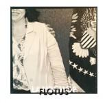
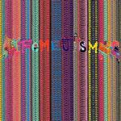
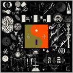
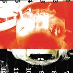
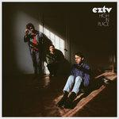

Music Reviews
-

Lambchop FLOTUS
Now closing in on 25 years, the Nashville band's twelfth album isn’t a reinvention as much as it is a calculated attempt to impose a new narrative stance on their longstanding career.
Juan Edgardo Rodríguez reviews... -

Empire of the Sun Two Vines
On their third full-length album, the Sydney, Australia duo's lush brand of global synthpop injects some much-needed blissful warmth into the alt-indie world.
Ellis Victoria reviews... -
Crying Beyond the Fleeting Gales
The Purchase, NY trio evolve from a sound chip-synthesized format to overturn the affectations of eighties stadium rock.
Juan Edgardo Rodríguez reviews... -
Various Lazarus (Original Cast Recording)
Bolstered by the actors' performances and some heavy rearrangements, Lazarus features many good to great covers of David Bowie songs. But it's the final three tracks by Bowie himself that outshine the rest of the record.
Joe Marvilli kills a little time with Lazarus... -

American Football (LP 2) American Football
On their long awaited return, seventeen years to be exact, American Football retain a calm and stately approach that undermines the wide-eyed vitality of their 1999 debut.
Juan Edgardo Rodríguez reviews... -

Deap Vally Femejism
Despite only being Deap Vally's second album, Femejism sounds like the Los Angeles duo are already running out of new ideas.
Matthew Smith reviews... -

Bon Iver 22, A Million
Bon Iver's third record finds Justin Vernon going through a personal crisis. Using chaotic sounds, he both covers and reveals a stirring, vulnerable core underneath.
Joe Marvilli follows Justin Vernon's odyssey of uncertainty... -

Pixies Head Carrier
It ain't Surfer Rosa or Doolittle. Let's get that out of the way first. But...
Juan Edgardo Rodríguez reviews... -
Banks The Altar
Banks’ second album, The Altar, exudes a brave, often melancholic narrative, making for a rewardingly insightful collection.
Ellis Victoria reviews... -

EZTV High in Place
EZTV are a tight, versatile band that doesn't cut corners, who eschew the impersonal for color and a pounding pulse. Their latest, High in Place, brims with musical confidence.
Angel Aguilar reviews...